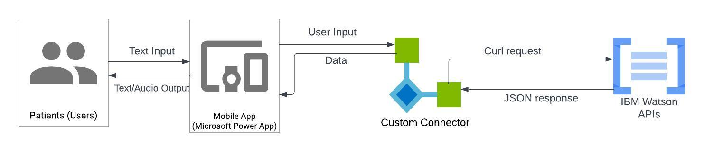

System Architecture
Overview
In Microsoft Power Platform, specifically Power Automate and Power App, allows the use of custom connector. While we are only building the custom connector, which is only a part of the system, it is important for us to understand its relation with Microsoft Power Platform and the implemented API, IBM Watson, in our case.
The system architecture diagram above shows the relation between users, Power App, custom connector and IBM Watson APIs using our demo appointment making app as an example. Patients, which are the user of the app, can launch the app and typed in commands that instruct the app to make an appointment. The app then proceeds to send the collected request to the IBM Watson Assistant API for making a new appointment. This is a communication between two platforms and it is done by our custom connector.
Communication
After the user input is collected and sent by the power app into custom connector, the connector make a request with the API using the collected data and a curl function.
For example “Create Session” in IBM Watson Assistant request:
POST {url}/v2/assistants/{assistant_id}/sessions
After IBM Watson API has completed its process with the data, it responses back to the connector with a JSON array, containing the processed data and status code (error code). After receiving the response, power app can then access the data saved on the custom connector, completing the whole communication.